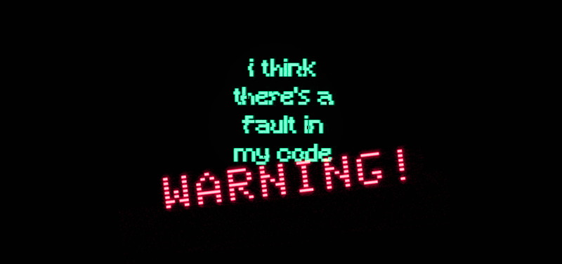
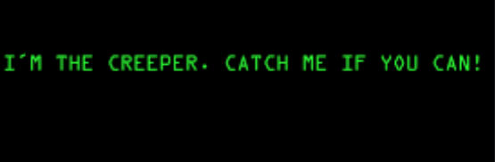
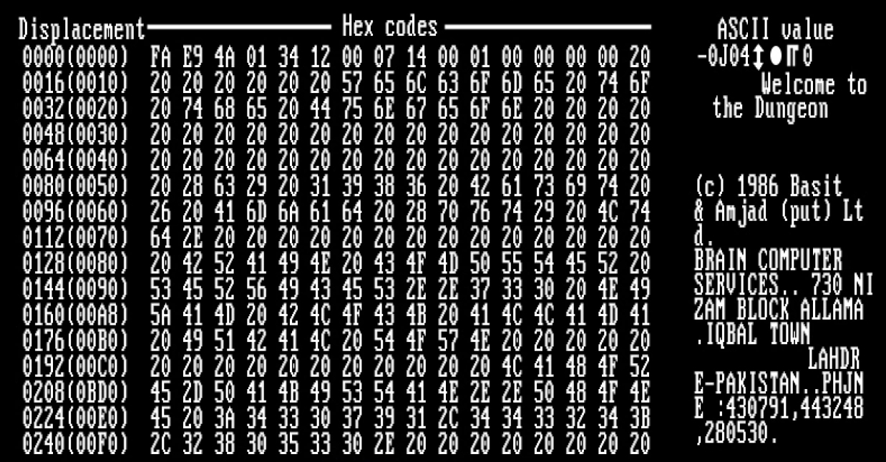

Once confined to the realms of theoretical science and speculative fiction, computer viruses have morphed into one of the main threats in the digital age. This transformation from an intriguing concept to a pervasive danger has not only reshaped the landscape of cybersecurity but has also imposed significant challenges to national security and dangers for everyday users. In this exploration, we trace the origins of computer viruses, charting their evolution through decades of innovation and malfeasance, to understand how they became a key concern for modern societies.
The notion of a computer virus was not born out of malice (or malice intent) but from theoretical discussions about self-replicating programs. In 1949, during his lectures at the University of Illinois, Hungarian scientist John von Neumann introduced the idea of self-reproducing automata. His theories, later published in 1966, proposed that computer programs, much like biological entities, could self-replicate. Although not specifically labelled as viruses at the time, these theoretical constructs laid the groundwork for what would later become a major field of study in computer science. The first practical implementation of von Neumann’s theories was seen in the 1960s at AT&T’s Bell Labs, where the game Darwin was developed by Victor Vyssotski, Robert Morris Sr., and Malcolm Douglas McIlroy on an IBM 7090 mainframe. The game involved programs, termed organisms, that competed by taking over each other’s memory space in a digital arena, essentially simulating a survival of the fittest scenario among software.
Much like other groundbreaking concepts, the idea of a malicious self-replicating program made its way into popular culture in 1970, thanks to Gregory Benford’s science fiction story ‘The Scarred Man’. This story vividly brought to life a self-replicating program akin to a computer virus, complete with a counteracting ‘vaccine’—a visionary notion that anticipated the advent of real-world antivirus software. The first program to perform the self-replicating function of a modern virus was Creeper, created in 1971 by Bob Thomas at BBN Technologies. Designed as an experiment, Creeper moved through the ARPANET, displaying the message, ‘I’m the creeper, catch me if you can!’ This foundational work paved the way for the development of malicious software.
In 1975, computer programmer John Walker developed the first Trojan, called ANIMAL. It was a ‘20 questions’ program that tried to guess the user’s favourite animal, using a clever machine learning algorithm to improve its questions. Walker included a subroutine called PERVADE, which copied ANIMAL into any user-accessible directories it could find. Although there is some debate as to whether ANIMAL was a Trojan or simply another virus, it is generally considered to be the first Trojan due to its method of disguising itself as something the user wanted and then performing actions without the user’s permission (copying itself into directories without the user’s knowledge or consent). This fits the definition of a Trojan: a type of malware that hides inside another program and performs actions without the user’s permission.
The 1970s and early 1980s saw the first instances of viruses crafted with harmful intentions. In 1974, the Rabbit (or Wabbit) virus emerged, replicating itself rapidly to the point of crashing systems. The speed of replication gave the virus its name. Technically, the Rabbit virus operated by exploiting vulnerabilities in the host system’s architecture. It was the first example of a Rabbit virus, a type of denial-of-service attack where a process continually replicates to deplete system resources. While the Rabbit virus itself may not have caused widespread havoc compared to later viruses, its impact on the field of cybersecurity was profound. It helped catalyse the development of early antivirus measures and informed the strategies used to combat future threats. In 1982, high school student Richard Skrenta created Elk Cloner, one of the first viruses to spread via floppy disks among personal computer users. Elk Cloner spread by infecting the Apple DOS 3.3 operating system using a technique now known as a boot sector virus. It was attached to a game which was then set to play. The 50th time the game was started, the virus was released, but instead of playing the game, it would change to a blank screen displaying a poem about the virus. If a computer booted from an infected floppy disk, a copy of the virus was placed in the computer’s memory. When an uninfected disk was inserted into the computer, the entire DOS (including Elk Cloner) would be copied to the disk, allowing it to spread from disk to disk. To prevent DOS from being continually rewritten each time the disk was accessed, Elk Cloner also wrote a signature byte to the disk’s directory, indicating that it had already been infected.
The term ‘computer virus’ was coined by Fred Cohen in 1983 while he was a graduate student. Fred Cohen’s experiments provided concrete evidence of the potential threat posed by computer viruses. His work demonstrated that these programs could not only replicate but also conceal their presence, making them difficult to detect and eradicate. He presented his findings in a seminal paper titled ‘Computer Viruses – Theory and Experiments’. Cohen introduced a small, self-replicating program into a UNIX system, referring to it as a ‘virus’. This program was able to spread from one file to another, replicating itself and modifying other programs to include a copy of itself. By the mid-1980s, the landscape of computer viruses had expanded significantly. The Brain virus, which appeared in 1986, targeted IBM PC platforms and employed stealth techniques to evade detection. The Brain virus was created by two Pakistani brothers, Basit and Amjad Farooq Alvi, who owned a computer store in Lahore. Interestingly, their initial intention was not to cause harm but to protect their medical software from being pirated. To achieve this, they embedded Brain into the boot sector of floppy disks, ensuring that any unauthorised copies of their software would be infected.
The release of the internet worm, also known as the Morris worm, in 1988 marked another important event in the history of cybersecurity. Created by Robert Tappan Morris, a graduate student at Cornell University, this self-replicating program exposed significant vulnerabilities in the early internet infrastructure, causing widespread disruption and prompting major advancements in computer security. Morris developed the worm as an experiment to gauge the size of the internet. His intention was not to cause harm but to explore the network’s capabilities. However, a critical flaw in the worm’s design led to it spreading uncontrollably, causing significant damage.
The initial success of these early viruses can be attributed to two primary factors: the absence of antivirus software and a general lack of awareness about the importance of cyber hygiene among users. The late 1980s and early 1990s marked a key period for the internet community. The proliferation of malware threats was a wake-up call, highlighting the urgent need for robust cybersecurity measures. In these years, the antivirus software industry saw rapid growth and diversification. Companies around the world began developing and releasing antivirus programs to address the escalating threat. In 1987, Bernd Robert Fix documented the first successful removal of a computer virus. That same year, G Data Software AG released the first antivirus software designed for Atari ST computers, signalling the commercial viability and necessity of antivirus solutions. Concurrently, McAfee, Inc. was founded and launched VirusScan, one of the earliest antivirus programs for personal computers. These developments marked the beginning of a concerted effort to protect users from the growing menace of computer viruses. Notable examples include Avira, which emerged as a significant player in Germany, and ThunderByte Antivirus from the Netherlands. Meanwhile, avast! was developed in Czechoslovakia, offering robust protection against emerging threats, and Dr Solomon’s Anti-Virus Toolkit became a trusted name in the United Kingdom. These early antivirus programs were instrumental in establishing the commercial antivirus industry. They provided users with essential tools to detect, remove, and prevent computer viruses, significantly enhancing the security of personal and business computing environments. The proliferation of these tools represented a collective global effort to combat the burgeoning threat of malware, laying the groundwork for the sophisticated cybersecurity solutions we rely on today.
Today, the landscape of cyber threats has evolved to include ransomware, spyware, and sophisticated cyberespionage tools, costing the global economy billions annually. Cybersecurity has become a critical component of national security strategies worldwide, with significant investments from governments and corporations to protect their infrastructure and data. The constant battle between malicious actors and cybersecurity experts is relentless, with millions of new viruses emerging daily, challenging experts to combat them effectively. The importance of robust security measures was starkly shown by the recent CrowdStrike incident on 19 July 2024. This incident brought down the digital networks of airports, hospitals, and governments globally, disrupting daily life, businesses, and government operations. Numerous industries, including airlines, banks, hotels, manufacturing, and more were severely affected. Essential services such as emergency response and government websites were also impacted. The financial damage from this worldwide outage is estimated to be at least USD 10 billion, underscoring the critical need for strong cybersecurity defences in our interconnected world. Computer viruses have been around since the beginning of the tech era. So, to think that there will be a solution that would eliminate all the viruses for good is not realistic. But that does not mean they cannot be contained, and that is exactly where cybersecurity measures step in. The more tech experts enhance security, the less likely viruses can cause significant damage on a global scale.